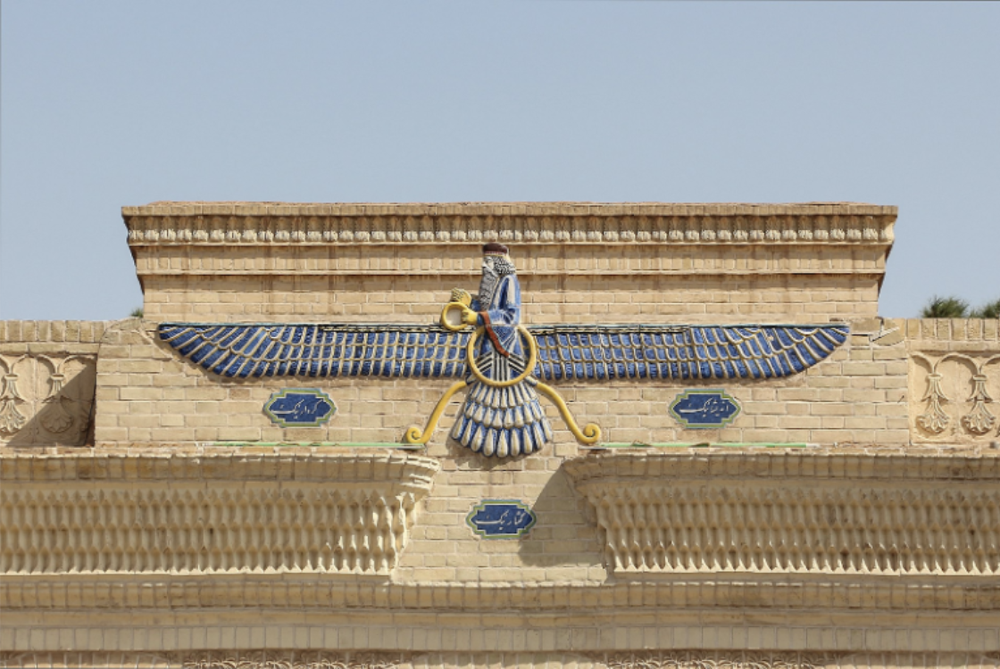

ZAID
The Sociologist Olav Velthuis on the art commodity. Velthuis speculates that people hate art flippers so much because its against the norm of art as a product that’s commodification is relatively restricted. The opening of a show as the ritualization of art becoming commodity. The most valuable pieces do not really come from the old masters because those are mostly in permanent collections, Velthuis calls them “terminal commodities.” All the most expensive art pieces are between 1890 and 1970 and are quite large. The acronym BRIC refers to the fastest market growing economies: Brazil, Russia, India and China.
One of Iran’s main symbols, inherited from Zoroastrianism. The symbol serves as a reminder to man’s purpose; to become one with Ahura Mazda the Zoroastrian God. Interesting example of religious iconography being folded into national iconography. The Iranian poet Ferdowsi has a Faravahar on his tomb.
